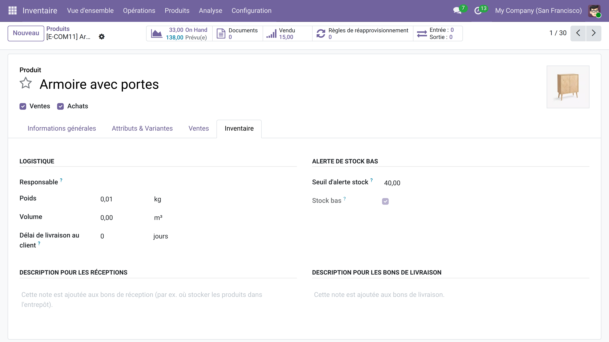
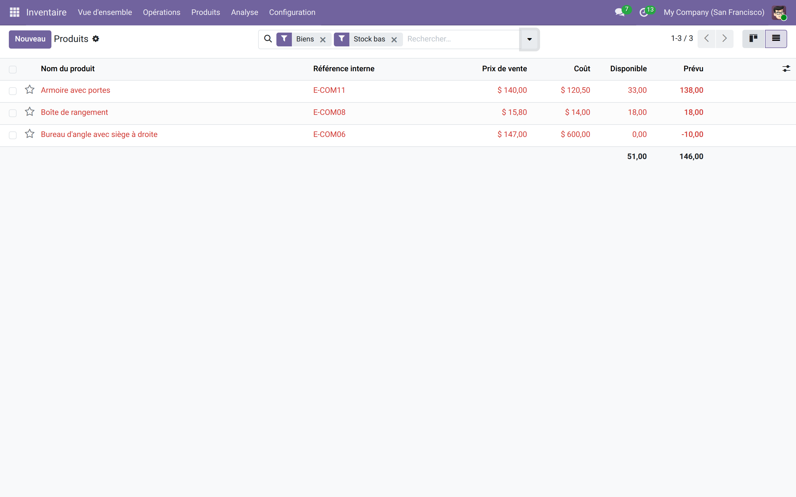
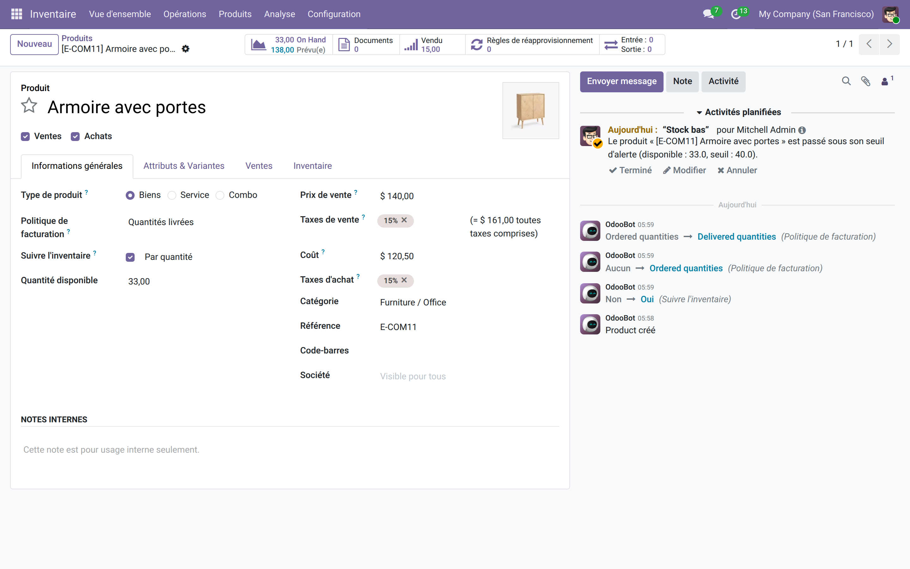

Low Stock Alert
Get warned before you run out — a threshold per product, red rows and a daily activity for the inventory manager, with no technical setup.
Odoo's replenishment rules trigger purchase orders — but they don't warn a human when a product slips below its critical threshold. The result: silent stockouts discovered too late, after a refused delivery or a blocked order line. What's missing is simply a visible signal and a daily reminder for the right person.
What it brings
- 🎯 Custom threshold per product — a simple numeric field in the Inventory tab; setting it to 0 disables the alert.
- 🔴 Red rows in the list — as soon as the available quantity drops below the threshold, the row is highlighted in red so you see it at a glance.
- 🔍 Dedicated “Low stock” filter — isolate every product on alert in one click, with no custom query.
- 📅 Automatic daily activity — a scheduled action creates a “To-Do” activity every day on each product on alert, assigned to the inventory manager.
- ✅ Built-in duplicate prevention — as long as the previous activity is not done, no new alert is created for that product.
In pictures
1. Set the threshold on the product form
In the Inventory tab, enter the minimum quantity below which you want to be alerted. The “Low stock” indicator updates in real time.

2. Spot products on alert instantly
The “Low stock” filter isolates every product below its threshold; rows turn red so you can read them at a glance without opening each record.

3. The manager's daily activity
Every morning, the scheduled action plans an activity on the products on alert. The inventory manager finds the restocking list right in their Odoo activities, without searching.

Why adopt it
- Free and self-contained — no external dependency, no third-party service subscription.
- Zero training: the threshold lives in the Inventory tab your teams already know.
- Alerts arrive in native Odoo activities — no extra email notification to configure.
- Duplicate prevention keeps the noise down: one activity per product until it is handled, no daily flood.
LGPL-3 license — compatible with Odoo 18.0. Support : apps@odooskills.com.